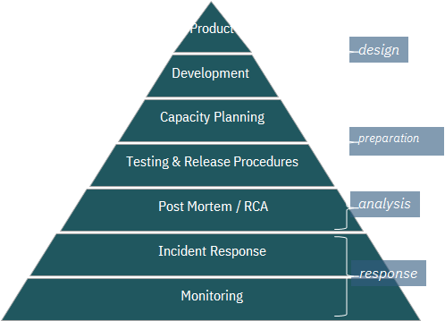
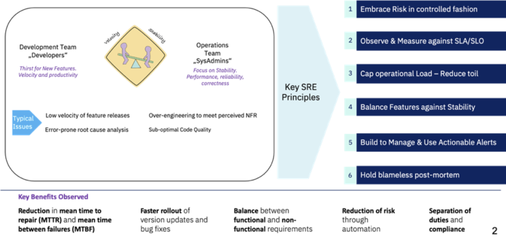

Continuous Improvement with Site Reliability Engineering (SRE)
Table of Contents
What is SRE?
Site Reliability Engineering (SRE) is an DevSecOps discipline that aims at developing automation in operational aspects of running IT application. This includes infrastructure provisioning, responding to faults and events, managing performance, etc. It was conceptualized in Google in 2003 for their systems and has been adopted by the industry over a period as an essential set of practices. SRE is an engineering approach to deliberately introduce reliability into site operations.
Fundamentally, it’s what happens when you ask a software engineer to design an operations function. SRE fundamentally changes the approach to systems management. It recognizes that throwing bodies at the problem is not a long term approach. Introducing ever and more complex layers of management does not yield a winning strategy.
SRE and Application Development
SRE is an important discipline for application development in the current and future. It has evolved into a product development paradigm - an ongoing process of incrementally delivering new capabilities, continuous focus in required on maintaining and improving the resilience of the application.
SRE Practices
| SRE Practices |
|---|
|  |
Key elements of an Engineering approach to Operations
- Understand your system System thinking! You can get still things done without understanding, but if you know what’s happening, you can innovate.
- Ask great questions Asking a really good question is like telepathically moving information from someone else’s brain to yours.
- Read the code Even difficult codebases, even in languages you don’t know. It can be easier than you expect to go look at the code and see what’s really happening.
- Debug like a wizard To be better at debugging.
- Write down a design Understand what all can go wrong. Use design docs, project briefs, etc. They help you catch misconceptions early and get good ideas.
- Understand the big picture Better technical decisions. Either be sure that you know why the thing’s important, or go do something else.
Principles and Tenets of SRE
An effect SRE practice has the following principles:
- System Thinking
- Data-Driven Decisions
- Engineering Rigid
- Embracing Risk
- Eliminating Toil
- Remove Technical Debt
- Simplicity
- Collaboration
- Shared Responsibility
- Trust & Transparency
If you take these principles and try to apply them to operating a system you will recognize some common features:
- Ops to scale with load through Automation, but don’t stop at Automation
- Cap operational load: 50% time spent on toil - 50% on engineering projects (improvements)
- Excess Ops work overflows to the Dev Team, share 5% of Ops work with Dev Team
- Have an SLA / SLO for the service, measure against the SLA / SLO
- Error budget to control velocity. Effective self-regulation of features vs. stability
- Observability, including the Golden Signals: Latency, Traffic, Errors, Saturation, Requests
- Actionable symptom-based alerts, from the user perspective. (Automated) runbooks to govern actions.
- Blameless post-mortem for every event
- Common staffing pool for SRE and Dev
Tenets of SRE
- Scale Ops sub-linearly with load
- Cap Operational load at 50%
- Handle Overflow
- SLA/SLO/SLI
- ORP & Error Budget
- Golden Signals
- Symptom-based Alerting
- Blameless Postmortems
- Staffing Pool
AIOps for SRE
Capture the most value from your cloud operations with Site Reliability Engineers (SRE) that are central to the ‘operations-centric’ design of our cloud management solutions. SRE principles enable enterprises to optimize their hybrid multicloud management and deliver:
- High resiliency and elastic architecture
- Reduction in errors and service requests
- Optimized saturation ensuring resources are not constrained
- Reduced latency by identifying hotspots and providing feedback to the development squads to automate the fixes
- Engineering automation into the operations process
Infusion of AIOps techniques in operations can allow systems to continuously improve and become more reliable.
| AIOps PoV |
|---|
 |
Shift Left
Automation with AI techniques enable us to shift incident resolution closer to the source of problems – towards zero touch application management. Shift left resulting in improved service resilience, efficiency & user experience through proactive, automated & cognitive application maintenance.
| AIOps Shift Left |
|---|
 |
Automated Operations
Embrace automated operations and intelligent management utilizing AI Ops to enhance performance across your enterprise.
| Automated Operations |
|---|
 |
Automate manual tasks involved in incident diagnosis, incident resolution, service request fulfillment, change implementation, scheduled / preventive maintenance & more to shift incident resolution closer to the source of problems.
AIOps in Integrated Service Management Toolchain
| Integrated Service Management Toolchain |
|---|
 |
IBM SRE Approach
IBM SRE approach brings measurable benefits through balance between Development & Operations.
| IBM Approach |
|---|
|  |
Key components of IBM’s SRE approach are:
- Identify and Design for the real reliability need
- Baseline SLOs (instead of 100% of 3 sec response time, target for 90%)
- Review architecture for significant use cases
- Define IaaC framework
- Enhance and Configure custom code quality checks
- Use the error budget to release new features
- Architect for Blue Green / Canary deployments with minimum or no downtime
- Arrive at error budgets and approve new features to be deployed. (When the availability targets are met)
- Observe everything
- Implement Build to manage with heartbeat APIs when functional APIs are secured
- Design and Implement Dashboards for various KPIs
- Introduce distributed tracing to pinpoint the transaction failures
- Automate everything which is repeatable
- Identify toil and implement automated runbook
- Create manual runbooks for toils which cannot be automated for L1.5
- Consistent CI/CD
- Implement touchless CI/CD with quality gates and automated (e.g. code coverage) regression tests
- Introduce Performance tests with Jmeter in CI/CD
- Ease of Operations
- SREs jump in as first responders for Sev 1 issues
- Introduce blameless port-mortem
- Chat Ops with Bots for creating automated ticketing and resolution
- Document RCAs and raise enhancement tickets for Dev Team
IBM has infused SRE into its Integrated Operations Reference Architecture too:
| Infused SRE in Integrated Operations Reference Architecture |
|---|
 |